solo/artistic (co)direction
Performance 2025, Dreamscape Festival, Tallinn
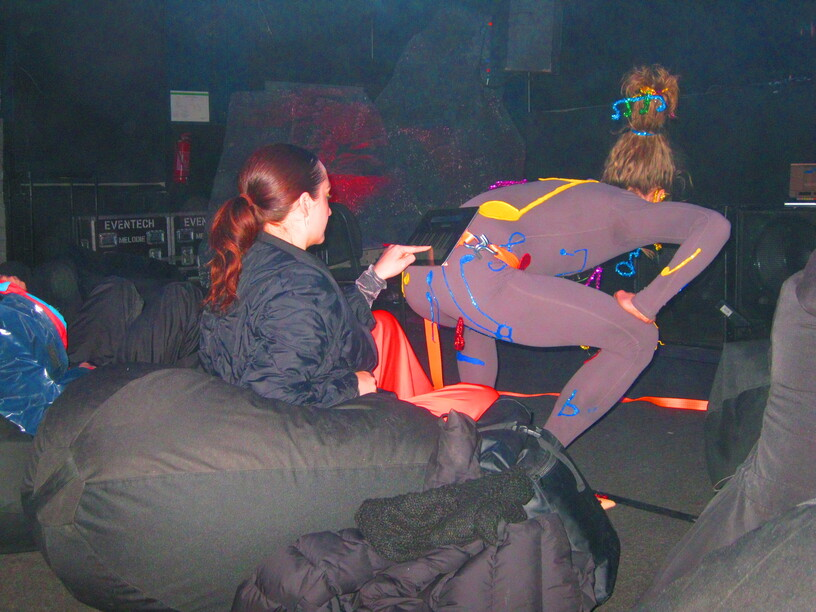 Photo by Maria Metsalu More inforecital 2024, Kaunas Artists' House 2024, Auto Italia Gallery, London 2023, Kanuti Gildi SAAL, Tallinn
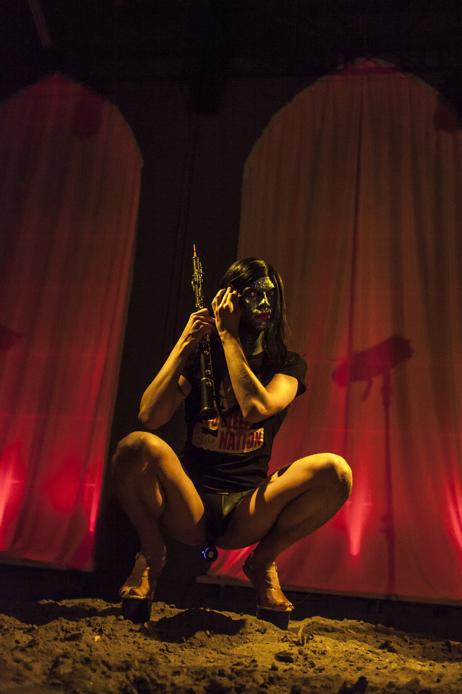 Photo by Alana Proosa Video More infoThe Snail Pace with Kris Lemsalu & Maria Metsalu 2025, The Hill's Party, Metz
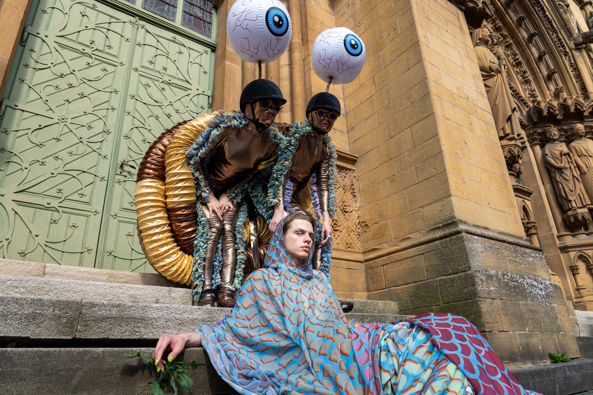 Photo by Jade Zombo More infoPerformance 2024, Saund Festival, Suuresadama
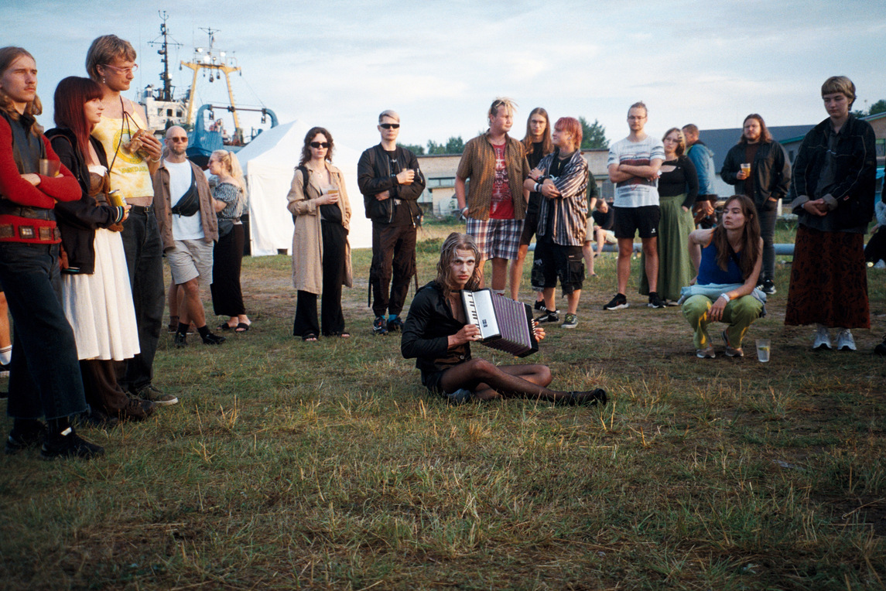 Photo by Madis Nestor More infoPeenar with Maria Metsalu 2024, Paavli Culture Factory, Tallinn
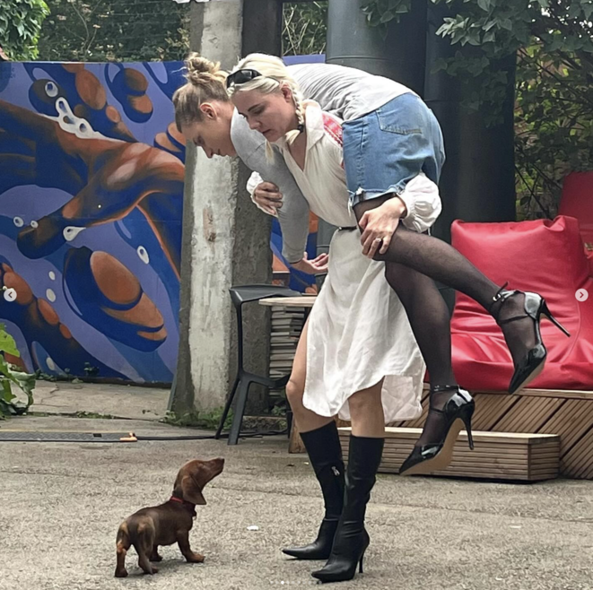 Photo by Maria Veske More infoall beautiful things with Marta Vaarik 2024, elektron.art theatre, Tallinn
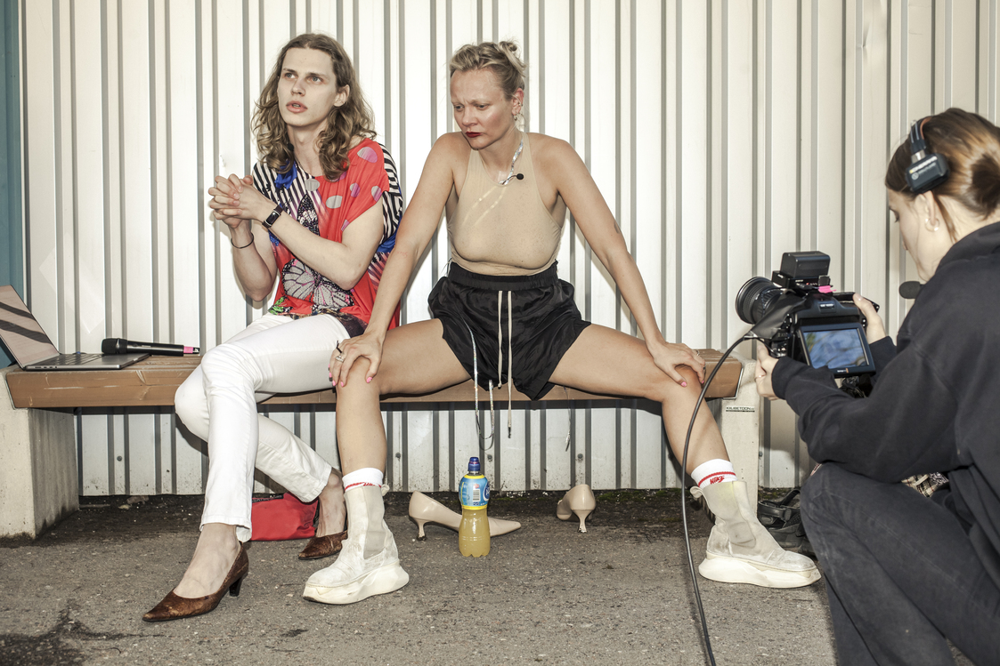 Photo by Alana Proosa More infoSabotage Alliance (Saboliit) with Liisbeth Horn & Mait Vesker (maiduk) 2022, elektron.art theatre, Tallinn
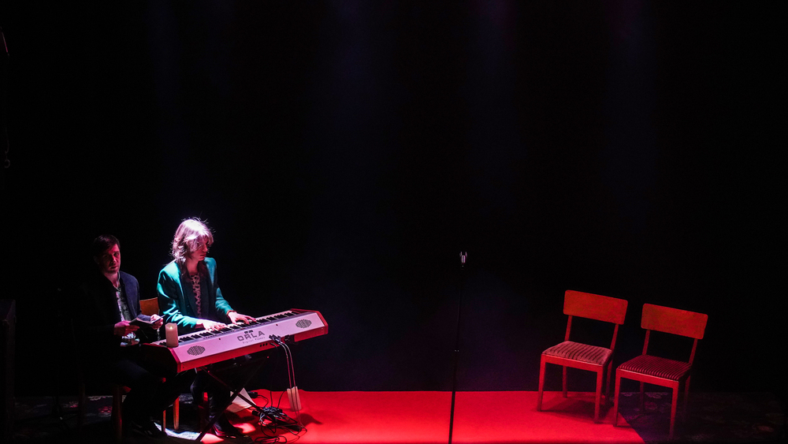 Photo by elektron.art More infoperformer
Old Piano by Kris Lemsalu 2025, Shedhalle, Zürich 2024, Moderna Museet, Malmö
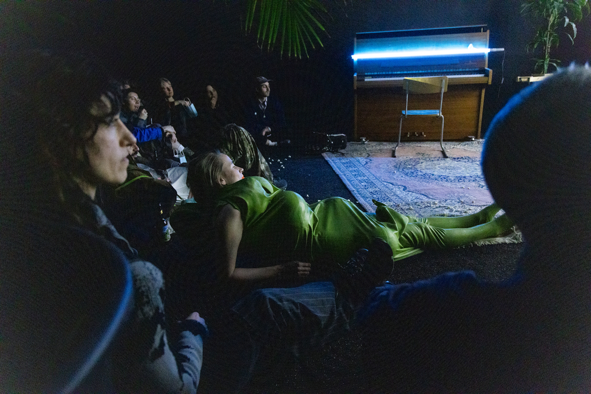 Photo by Binta Kopp More infoDirty Laughing Molecules by Poncili Creación 2024, Estonian Contemporary Art Museum, Tallinn
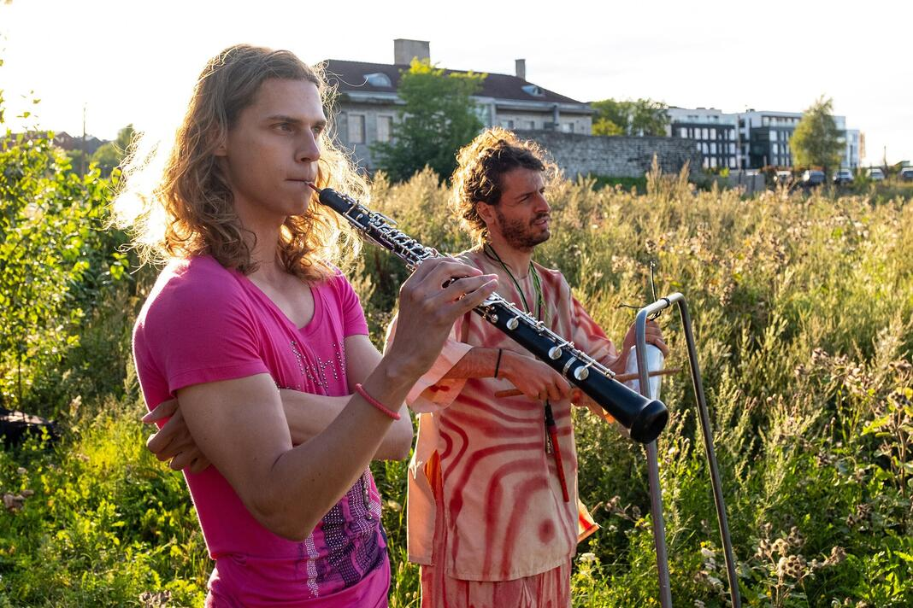 Photo by Aron Urb More infoBy the end of the sentence I have forgotten where it started by Nele Tiidelepp 2023, Kanuti Gildi SAAL, Tallinn
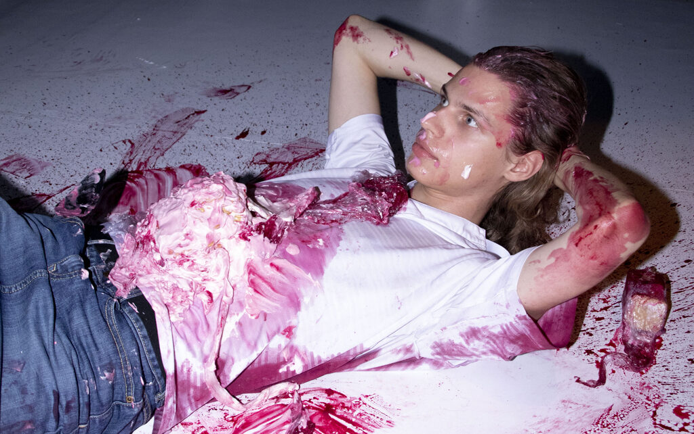 Photo by Kertu Rannula More infoSomething Great by Maike Lond & Hendrik Kaljujärv 2022, elektron.art theatre, Tallinn
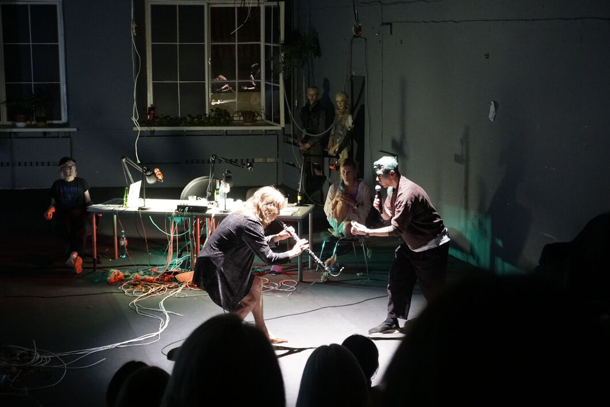 Photo by elektron.art More info